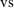
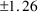
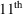
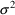
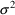

NONMEM Users Guide Part V - Introductory Guide - Chapter 2
1. What This Chapter is About
2. An Individual’s Theophylline Kinetics
2.1. The NM-TRAN Control Records
2.2. The Model
2.3. The Output
3. A Population Model for Phenobarbital
3.1. The NM-TRAN Control Records
3.2. The Model
3.3. The Output
4. Overview
NONMEM Users Guide Part V - Introductory Guide - Chapter 2
Chapter 2 -
NONMEM Examples
1. What This Chapter is About
In this chapter, two
examples of the use of NONMEM will be given. The first
estimates pharmacokinetic parameters of an individual from
his data; the second estimates so-called population
parameters from data from a group of individuals. The
examples serve to introduce NONMEM notation, input and
output, and to provide an idea of what is possible using the
system. The second example will be discussed again in
Chapter 11.
2. An Individual’s Theophylline Kinetics
Figure 2.1 shows the
input used to fit a model to observations of theophylline
plasma concentration

time in a single individual after a single dose of 320
mg.
$PROB SIMPLE NONLINEAR REGRESSION - THEOPHYLINE
$INPUT ID AMT TIME DV
$DATA P2DATA
$SUBROUTINE ADVAN2
$PK
KA=THETA(1)
K=THETA(2)
V=THETA(3)
S2=V
$ERROR
Y=F+ERR(1)
$THETA (0, 1.7) (0, .102) (0, 29.)
$OMEGA 1.2
$ESTIMATION PRINT=5
$COVARIANCE
$TABLE ID AMT TIME
$SCATTER PRED VS DV UNIT
Figure 2.1. The
input (i.e., NM-TRAN control records) for analysis of some
individual theophylline data.
The first line (record)
gives a name to the problem. The rest of the lines (records)
discuss the data, the model, and the desired output. Before
going into these in some greater detail, you may want to
look right now at figures 2.1 and 2.2, and then 2.4 and 2.5.
Figure 2.2 shows the data for this problem, and figures 2.4
and 2.5 show some of NONMEM’s output. All you need to
know to get a good idea of what this analysis shows is that
the one-compartment model with first-order absorption has
been used; the observed concentrations and the times of
observation after the bolus dose are in columns 4 and 3,
respectively, of figure 2.2; and that the symbol DV stands
for dependent variable (the observed concentrations, in this
case). You should, for example, even at this point, be able
to tell that the estimate of Volume of Distribution (V in
figure 2.1, and THETA(3) in figure 2.4) is 32 liters (L),
with a standard error of

L. Now consider the figures in greater detail.
2.1. The NM-TRAN Control Records
The second record of
figure 2.1 names the data items that appear on each data
record, and the third record gives the name of the file
containing the data records, P2DATA in this example. Figure
2.2 shows the contents of P2DATA.
2 320. 0. 0.
2 0. .27 1.71
2 0. .52 7.91
2 0. 1. 8.31
2 0. 1.92 8.33
2 0. 3.5 6.85
2 0. 5.02 6.08
2 0. 7.03 5.4
2 0. 9. 4.55
2 0. 12. 3.01
2 0. 24.3 .90
Figure 2.2. The
contents of the data file containing the data
records.
According to the second
record of figure 2.1, the third data item (column) of a data
record is TIME, the time associated with the event described
by that data record. The event at a given time (for this
simple data set) can either be the administration of a dose
or the acquisition of an observation. The second data item
of a data record is AMT, amount (in this case in mg) of the
dose given at TIME, the time of the record. Apparently, 320
mg is given at time zero (first record of figure 2.2), and
no further doses are given (all zeros in column 2
thereafter). The fourth data item (column) in P2DATA is
named DV, for Dependent Variable (the measured plasma
theophylline concentration), as already mentioned. So, all
of the data records, except the first, give the time after
the 320 mg dose, and the concentration of theophylline (in
mg/L) measured in a plasma sample drawn at that time. The
first data item is labelled ID for the IDentification number
of the patient. Here it happens to be 2.
2.2. The Model
The fourth record of
figure 2.1 identifies the pharmacokinetic model PREDPP is to
use: the one-compartment model with first-order absorption.
It is implemented by an ADVAN subroutine (see Chapter 1,
Section 3.2) which is called ADVAN2 (See Chapter 7). Figure
2.3 shows the part of the output of NONMEM for this problem
that verifies the user’s choice of model. It also
describes the features of the model in terms of its
compartments. Of relevance to this problem are the DEPOT
compartment (where the dose goes, and from which drug enters
the central compartment by a first order process), and the
CENTRAL compartment itself. Note, for example, that the
default compartment for doses (i.e., where PREDPP will add
doses if not otherwise instructed) is the DEPOT compartment,
as it should be.
ONE COMPARTMENT MODEL WITH FIRST-ORDER ABSORPTION (ADVAN2)
MAXIMUM NO. OF BASIC PK PARAMETERS: 3
BASIC PK PARAMETERS (AFTER TRANSLATION):
ELIMINATION RATE (K) IS BASIC PK PARAMETER NO.: 1
ABSORPTION RATE (KA) IS BASIC PK PARAMETER NO.: 3
COMPARTMENT ATTRIBUTES
COMPT. NO. FUNCTION INITIAL ON/OFF DOSE DEFAULT DEFAULT
STATUS ALLOWED ALLOWED FOR DOSE FOR OBS.
1 DEPOT OFF YES YES YES NO
2 CENTRAL ON NO YES NO YES
3 OUTPUT OFF YES NO NO NO
Figure 2.3. The
PREDPP output that verifies the user’s choice of
model. Features of the model are discussed, such as the
names and numbering of parameters, and the attributes of the
various compartments in the model.
The fifth input record
(figure 2.1) signals the start of the user’s
specification of the model for the pharmacokinetic
parameters. This specification is given in the next 4 lines
of so-called abbreviated code (the $PK record, along
with this abbreviated code is called the $PK block). Some of
the parameters that NONMEM estimates are denoted by
 herein, and are labeled THETA in NONMEM input and output.
The model specified in figure 2.1 is very simple. It says
that a different unknown constant (NONMEM parameter) is to
be assigned to each pharmacokinetic parameter: first-order
absorption rate, KA (line 1 of the PK block, after the $PK
record - THETA(1)), rate constant of elimination, K (line 2
- THETA(2)), and volume of distribution, V (line 3 -
THETA(3)). The S2 parameter (a so-called scale parameter) is
discussed in Chapter 3, Section 2.2.
herein, and are labeled THETA in NONMEM input and output.
The model specified in figure 2.1 is very simple. It says
that a different unknown constant (NONMEM parameter) is to
be assigned to each pharmacokinetic parameter: first-order
absorption rate, KA (line 1 of the PK block, after the $PK
record - THETA(1)), rate constant of elimination, K (line 2
- THETA(2)), and volume of distribution, V (line 3 -
THETA(3)). The S2 parameter (a so-called scale parameter) is
discussed in Chapter 3, Section 2.2.
The sixth input record
(figure 2.1 -

line) signals the start of the user’s specification of
the (statistical) model for the lack of fit of the
pharmacokinetic model to the data. This specification is
given in the next line of abbreviated code (the $ERROR
record, along with this line of abbreviated code is called
the $ERROR block). The model here says that observations
differ from predictions by an additive error
(ERR(1)).
Record 7 ($THETA) gives
NONMEM information about possible values of each element of
 in the format: lower bound, initial estimate, upper bound.
When, as in this particular record, only two numbers are
given for an element of
in the format: lower bound, initial estimate, upper bound.
When, as in this particular record, only two numbers are
given for an element of
 , these are understood to mean the lower bound and initial
estimate; the upper bound is unlimited. Record 8 ($OMEGA)
gives NONMEM an initial estimate of the variance of ERR(1).
This statistical parameter is often denoted by

in statistical discussions, but with data from a single
individual, it is denoted by
, these are understood to mean the lower bound and initial
estimate; the upper bound is unlimited. Record 8 ($OMEGA)
gives NONMEM an initial estimate of the variance of ERR(1).
This statistical parameter is often denoted by

in statistical discussions, but with data from a single
individual, it is denoted by
 in NONMEM documentation, and by OMEGA in NONMEM input and
output. It is understood that a variance parameter is always
nonnegative. The $OMEGA record is further discussed in
Chapter 9, Section 3.
in NONMEM documentation, and by OMEGA in NONMEM input and
output. It is understood that a variance parameter is always
nonnegative. The $OMEGA record is further discussed in
Chapter 9, Section 3.
2.3. The Output
Record 9 ($ESTIMATION)
instructs NONMEM to obtain estimates of the parameters, and
the next record ($COVARIANCE) asks that it also obtain
standard errors of the parameter estimates. The output is
shown in figure 2.4. It requires little discussion. The
first item, the minimum value of the objective function, is
a goodness of fit statistic, much like a sum of squares (and
as with a sum of squares, the lower the value, the better
the fit). The parameter estimates (the parameter values at
which the objective function is minimized) and their
standard errors follow. Note that the estimate of OMEGA,
too, has a standard error. Unlike most fitting programs,
NONMEM treats this parameter like any other.
************************************************************************************************************************
******************** ********************
******************** MINIMUM VALUE OF OBJECTIVE FUNCTION ********************
******************** ********************
************************************************************************************************************************
************************************************** 8.940 **************************************************
************************************************************************************************************************
******************** ********************
******************** FINAL PARAMETER ESTIMATE ********************
******************** ********************
************************************************************************************************************************
THETA - VECTOR OF FIXED EFFECTS *********************
TH 1 TH 2 TH 3
1.94E+00 1.02E-01 3.20E+01
OMEGA - COV MATRIX FOR RANDOM EFFECTS - ETAS ********
ETA1
ETA1 8.99E-01
************************************************************************************************************************
******************** ********************
******************** STANDARD ERROR OF ESTIMATE ********************
******************** ********************
************************************************************************************************************************
THETA - VECTOR OF FIXED EFFECTS *********************
TH 1 TH 2 TH 3
6.28E-01 7.35E-03 1.25E+00
OMEGA - COV MATRIX FOR RANDOM EFFECTS - ETAS ********
ETA1
ETA1 5.44E-01
Figure 2.4. NONMEM
output giving the goodness of fit statistic (the minimum
value of the objective function) the parameter estimates,
and their standard errors.
The next to last control
record asks NONMEM to print a table displaying the input
data and certain computed quantities. A portion of a NONMEM
table is shown in figure 10.10 of Chapter 10. The last
control record asks NONMEM to make a scatterplot of the
prediction of each plasma concentration (PRED) VS the
observed value (DV) and to draw the line of identity (UNIT,
for "unit slope" line) on the plot. The plot is
shown in figure 2.5.
PRED VS. DV
8.00E-01 2.34E+00 3.88E+00 PRED 5.42E+00 6.96E+00 8.50E+00
. . . . . .
. . . . . . . . . . .
7.00E-01. . . . . . . . . . . . . . . . . . . . . . . . . . . . . . . . . . . . . . . . . . . . . . . . . . .
.*. .
. . .
. . .
. . .
. . .
. . * .
. . .
. . .
. . .
2.26E+00. . ..
. . .
. . .
. . .
. . .
. * .
. . .
. . .
. . .
. . .
3.82E+00. . ..
. . .
. . .
. . .
. . .
DV . * . .
. . .
. . .
. . .
. . .
5.38E+00. * . ..
. . .
. . .
. . .
. . * .
. . .
. . .
. . .
. . .
. . * .
6.94E+00. . ..
. . .
. . .
. . .
. . .
. . .
. * . .
. . .
. . .
. * *.
8.50E+00. . . . . . . . . . . . . . . . . . . . . . . . . . . . . . . . . . . . . . . . . . . . . . . . . . .
. . . . . . . . . . .
Figure 2.5. A
scatterplot of the observed data (DV) vs the predictions of
the best-fitting model parameters (PRED). The line of
identity (intercept = 0; slope = 1) is drawn. If all points
fell on that line, the fit would be
perfect.
3. A Population Model for Phenobarbital
About 60 infants were
given phenobarbital therapeutically. A plasma concentration
was measured in each some hours after the first (loading)
dose, followed by multiple maintenance doses. A second, and
sometimes a third concentration were measured later. In all,
155 concentrations were observed. Figure 2.6 gives the
NM-TRAN control records. The data are too lengthy to show in
full, but figure 2.7 shows the data for the first
individual†.
----------
† File PHENO
of NONMEM distribution medium contains the complete data
set.
----------
Figures 2.8 - 2.10 have
some relevant output. Again, most of the analysis results
are apparent from the figures, and you should try to see if
you can figure them out before going further. Note that the
$INPUT record now defines a new data item, WT, the patient
weight. It’s value is given on every data record for
an individual, in the column indicated. This is so despite
the fact that WT may not change within an individual. This
is a bit repetitious, but convenient.
$PROBLEM PHENOBARB
$INPUT ID TIME AMT WT APGR DV
$DATA PHENO
$SUBROUTINE ADVAN1
$PK
TVCL=THETA(1)
CL=TVCL+ETA(1)
TVVD=THETA(2)
V=TVVD+ETA(2)
; THE FOLLOWING ARE REQUIRED BY PREDPP
K=CL/V
S1=V
$ERROR
Y=F+ERR(1)
$THETA (0,.0047) (0,.99)
$OMEGA .0000055, .04
$SIGMA 25
$ESTIMATION PRINT=5
$TABLE ID TIME AMT WT APGR
$COVARIANCE
$SCATTER PRED VS DV UNIT
$SCATTER RES VS WT
Figure 2.6.
NM-TRAN control records for analysis of some population
phenobarbital data.
1 0. 25.0 1.4 7 .
1 2.0 . 1.4 7 17.3
1 12.5 3.5 1.4 7 .
1 24.5 3.5 1.4 7 .
1 37.0 3.5 1.4 7 .
1 48.0 3.5 1.4 7 .
1 60.5 3.5 1.4 7 .
1 72.5 3.5 1.4 7 .
1 85.3 3.5 1.4 7 .
1 96.5 3.5 1.4 7 .
1 108.5 3.5 1.4 7 .
1 112.5 . 1.4 7 31.0
Figure 2.7. The
first individual’s phenobarbital
data.
3.1. The NM-TRAN Control Records
The records are very
similar to those for the theophylline problem. The new
features are that the model has changed (it is implemented
by ADVAN1, not ADVAN2), the model for the pharmacokinetic
parameters is more complicated, and an additional
scatterplot is requested. The data for each infant is
similar to those shown in figure 2.7; however, now all of
the data records for each infant start with the same
value for the ID data item (column 1), but this value
differs between infants.
3.2. The Model
ADVAN1 implements the
one-compartment (monoexponential) model, without first order
absorption. No absorption model was needed for this problem
because all concentrations were measured many hours after
the last (oral) dose, so absorption could be considered to
be complete, and, for the purposes of data analysis,
immediate.
The parameters of the
one-compartment model are defined by the abbreviated code
following the $PK statement: Clearance (CL) and Volume of
Distribution (V). However, here each parameter is not simply
equal to one of NONMEM’s parameters (an element of
THETA). Rather, CL, for example, is equal to a parameter
(THETA(1)) plus a new term, ETA(1). The latter expresses
interindividual variability, and stands for the deviation of
the individual’s true clearance (CL) from the
population value (TVCL, Typical Value of CLearance, which,
in turn, is simply THETA(1)). This model is essentially
different from the theophylline model, because it
incorporates interindividual variability (something that an
individual model need not do). Note that since PREDPP
ultimately needs the values of microconstants, rather than
physiological-based pharmacokinetic parameters such as
clearance, code must be given for K, the rate constant of
elimination. There is, though, a simple alternative to
writing this additional line of code. It is discussed in
Chapter 3 Section 2.1.
The abbreviated code
after the $ERROR record is exactly the same as that with the
theophylline data and expresses the same model for lack-of
fit between observations and predictions for an individual.
The $OMEGA and $SIGMA records, which give NONMEM information
about the estimated variances of the ETA and ERR variables,
are discussed in Chapter 9, Section 3. Previously the
initial estimate of the variance of ERR(1) was given on a
$OMEGA record. Here it is given on a $SIGMA record. This
difference in NONMEM conventions between individual type
data and population type data will be discussed more fully
in Chapters 3 and 4.
3.3. The Output
NONMEM is again
instructed to estimate the parameters and their standard
errors. The results are shown in figures 2.8 and
2.9.
************************************************************************************************************************
******************** ********************
******************** MINIMUM VALUE OF OBJECTIVE FUNCTION ********************
******************** ********************
************************************************************************************************************************
************************************************** 717.203 **************************************************
************************************************************************************************************************
******************** ********************
******************** FINAL PARAMETER ESTIMATE ********************
******************** ********************
************************************************************************************************************************
THETA - VECTOR OF FIXED EFFECTS *********************
TH 1 TH 2
5.48E-03 1.40E+00
OMEGA - COV MATRIX FOR RANDOM EFFECTS - ETAS ********
ETA1 ETA2
ETA1 6.85E-06
ETA2 0.00E+00 2.86E-01
SIGMA - COV MATRIX FOR RANDOM EFFECTS - EPSILONS ****
EPS1
EPS1 8.01E+00
Figure 2.8. NONMEM
output giving the goodness of fit statistic (the minimum
value of the objective function) and the parameter estimates
for the phenobarbital problem.
************************************************************************************************************************
******************** ********************
******************** STANDARD ERROR OF ESTIMATE ********************
******************** ********************
************************************************************************************************************************
THETA - VECTOR OF FIXED EFFECTS *********************
TH 1 TH 2
4.86E-04 7.84E-02
OMEGA - COV MATRIX FOR RANDOM EFFECTS - ETAS ********
ETA1 ETA2
ETA1 2.27E-06
ETA2 ......... 8.34E-02
SIGMA - COV MATRIX FOR RANDOM EFFECTS - EPSILONS ****
EPS1
EPS1 1.49E+00
Figure 2.9. NONMEM
output giving the standard errors of the parameter estimates
for the phenobarbital problem.
Note that now there are
estimates of the variances of the interindividual
differences in CL (OMEGA - ETA1) and V (OMEGA - ETA2), as
well as of the residual error variance (denoted by SIGMA in
NONMEM output when the data are from a population; again,
see Chapters 3 and 4). There are also standard errors for
these estimates.
The next-to-last control
record asks NONMEM to make the same kind of scatterplot as
in the theophylline problem: a plot of the predictions vs
the observations. Here, a prediction for an
individual’s observation is based on typical
(population) values of the pharmacokinetic parameters (see
figure 2.8), rather than the values of the pharmacokinetic
parameters for the specific individual. The plot is shown in
figure 2.10.
PRED VS. DV
0.00E+00 2.60E+01 5.20E+01 PRED 7.80E+01 1.04E+02 1.30E+02
. . . . . .
. . . . . . . . . . .
5.00E+00. . . . . . . . . . . . . . . . . . . . . . . . . . . . . . . . . . . . . . . . . . . . . . . . . . .
. . * .
. . .
. . .
. * .
. . .
. * * ** * * .
. * * ** * * * .
. .* .
. * *3 * * * .
1.80E+01. * *** *2 * ..
. * * 3*2 * .
. 2 * . *2 2* * * .
. *2 **2*. * * * * .
. *2* 2 . * * .
. *2 * ** * ** * .
. ** *** 3. * * * .
. * . 2 * * .
. * 2 . ** * * * .
. * * *.2 * * .
3.10E+01. * **** 2** ..
. * ** . .
. * 22* * * .
. * * . * .
. ** * . .
DV . * * ** * * * * .
. * * . .
. * * . .
. * . * .
. . .
4.40E+01. . ..
. . .
. . .
. . .
. . .
. . .
. . .
. . .
. . .
. . .
5.70E+01. . ..
. * . .
. . .
. . .
. . .
. . .
. . .
. . .
. * . .
. . .
7.00E+01. . . . . . . . . . . . . . . . . . . . . . . . . . . . . . . . . . . . . . . . . . . . . . . . . . .
. . . . . . . . . . .
Figure 2.10. A
scatterplot of the observed data (DV) vs the predictions
with the best fitting model parameters (PRED). The line of
identity (intercept = 0; slope = 1) is drawn. If all points
fell on that line, the fit would be perfect. Here, in
contrast to figure 2.5, the data arise from many different
individuals. One cannot tell which data came from which
infant.
Although the fit is
fairly good, the points far to the right of the line of
identity of figure 2.10 indicate that there are many
predictions (PRED) that are much higher than their
corresponding observations (DV). This is seen from another
point of view in the second scatterplot. This scatterplot
plots residuals (RES) vs patient weight (from the data item,
WT — see figure 2.6). A residual is the difference
between an observed concentration and its prediction (the
same prediction used in the scatterplot of figure 2.10). The
residuals reflect not only lack of fit between observations
and predictions for a given individual (the variance SIGMA),
but also interindividual variability (the variances
comprising OMEGA). They can be thought of as reflecting the
part of the data that the model does not explain. As can be
seen from figure 2.11, there is a clear relationship between
the sign and magnitude of the residuals and patient weight.
Here, the patients with the largest weights have the most
negative residuals; i.e., their predictions are much larger
than their observations. These are the same points that fell
on the far right of figure 2.10.
RES VS. WT
-9.00E+01 -6.60E+01 -4.20E+01 RES -1.80E+01 6.00E+00 3.00E+01
. . . . . .
. . . . . . . . . . .
5.00E-01. . . . . . . . . . . . . . . . . . . . . . . . . . . . . . . . . . . . . ... . . . . . . . . . . . .
. . .
. . * .
. *. *** 2 * **2 .
. . .
. . * 2 .
. * 23 2* * .
. . .
. * **. **23* .
. * 22 **2 4*3* * * .
1.14E+00. . ..
. * * .*2*42*** .
. *** 34** .
. . .
. * ***222224* .
. . .
. * ** ** ****** .
. . .
. . .
. * * ***3 * .
1.78E+00. **2 ** 2* ..
. . .
. ** * * .* .
. . .
. . .
WT . * * . .
. . .
. . .
. . .
. . .
2.42E+00. . ..
. 2 . .
. . .
. * . .
. . .
. . .
. * * . .
. . .
. . .
. . .
3.06E+00. . ..
. * * * . .
. 2 * * . .
. . .
. . .
. . .
. . .
. * * . .
. * * * . .
. . .
3.70E+00. . . . . . . . . . . . . . . . . . . . . . . . . . . . . . . . . . . . . ... . . . . . . . . . . . .
. . . . . . . . . . .
Figure 2.11. A
scatterplot of the residuals (RES) vs patient weight (WT).
The pattern suggests that observations are underpredicted in
infants with low weight, and overpredicted in those with
higher weights.
An obvious explanation is
that Clearance or Volume, or both, increase with weight, so
that without weight being taken into account, too high a
prediction is being made for a larger infant and too low a
prediction is being made for a smaller infant, all other
things (i.e., dose) being equal. To see if accounting for
weight improves the fit, the run specified in figure 2.12
can be done.
$PROBLEM PHENOBARB WITH WEIGHT IN MODELS FOR CL AND V
$INPUT ID TIME AMT WT APGR DV
$DATA PHENO
$SUBROUTINE ADVAN1
$PK
TVCL=THETA(1)+THETA(3)*WT
CL=TVCL+ETA(1)
TVVD=THETA(2)+THETA(4)*WT
V=TVVD+ETA(2)
; THE FOLLOWING ARE REQUIRED BY PREDPP
K=CL/V
S1=V
$ERROR
Y=F+ERR(1)
$THETA (0,.0027) (0,.70) .0018 .5
$OMEGA .000007, .3
$SIGMA 8
$ESTIMATION PRINT=5
$COVARIANCE
$TABLE ID TIME AMT WT APGR DV
$SCATTER PRED VS DV UNIT
$SCATTER RES VS WT
Figure 2.12.
NM-TRAN control records for fitting a model taking into
account the effect of patient weight to the population
phenobarbital data.
Now both TVCL and TVVD
are linear functions of weight with, in the case of TVCL,
for example, intercept THETA(1), and slope THETA(3). Both
slope and intercept are "population" parameters
since they relate weight to typical population values of the
pharmacokinetic parameter. Now we see why WT is given in
every data record: the abbreviated PK code may need to be
evaluated at each event time. If WT did not change over time
within any patient, it could be given only on the first data
record for each patient, but then slightly more complicated
abbreviated code would be needed. The output from running
the input of figure 2.12 is shown in figures 2.13 -
2.16.
************************************************************************************************************************
******************** ********************
******************** MINIMUM VALUE OF OBJECTIVE FUNCTION ********************
******************** ********************
************************************************************************************************************************
************************************************** 609.134 **************************************************
************************************************************************************************************************
******************** ********************
******************** FINAL PARAMETER ESTIMATE ********************
******************** ********************
************************************************************************************************************************
THETA - VECTOR OF FIXED EFFECTS *********************
TH 1 TH 2 TH 3 TH 4
1.43E-11 1.21E-01 4.77E-03 9.18E-01
OMEGA - COV MATRIX FOR RANDOM EFFECTS - ETAS ********
ETA1 ETA2
ETA1 1.36E-06
ETA2 0.00E+00 7.51E-02
SIGMA - COV MATRIX FOR RANDOM EFFECTS - EPSILONS ****
EPS1
EPS1 8.71E+00
Figure 2.13. The
minimum objective function value and parameter estimates for
the phenobarbital data, using the model of figure 2.12,
which takes into account the effect of patient
weight.
************************************************************************************************************************
******************** ********************
******************** STANDARD ERROR OF ESTIMATE ********************
******************** ********************
************************************************************************************************************************
THETA - VECTOR OF FIXED EFFECTS *********************
TH 1 TH 2 TH 3 TH 4
9.49E-11 1.46E-01 2.24E-04 1.13E-01
OMEGA - COV MATRIX FOR RANDOM EFFECTS - ETAS ********
ETA1 ETA2
ETA1 7.24E-07
ETA2 ......... 3.63E-02
SIGMA - COV MATRIX FOR RANDOM EFFECTS - EPSILONS ****
EPS1
EPS1 1.71E+00
Figure 2.14. The
standard errors of the parameter estimates for the
phenobarbital data, using the model of figure 2.12, which
takes into account the effect of patient
weight.
Note the improvement in
the minimum objective function value (it drops 108 points),
and the profound decreases in the sizes of the estimates of
the interindividual variances; now that weight is in the
model, there is less unexplained interindividual
variability. As will be discussed in Chapter 5, the decrease
in the objective function can be used for a formal
hypothesis test of the appropriateness of the new model
(figure 2.12) for the effect of weight on the
pharmacokinetic parameters.
Note also the very small
values estimated for THETA(1) and for its standard error.
The intercept term of TVCL does not appear to be an
important part of the model. This model is refined in
Chapter 10, Section 6.2, where it is seen that deleting
THETA(1) and THETA(3) produces a model that fits as well as
the model including them.
PRED VS. DV
9.00E+00 1.78E+01 2.66E+01 PRED 3.54E+01 4.42E+01 5.30E+01
. . . . . .
. . . . . . . . . . .
5.00E+00. . . . . . . . . . . . . . . . . . . . . . . . . . . . . . . . . . . . . . . . . . . . . . . . . . .
. * .
. .
.. .
. * . .
. . .
. . * * ** ** .
. * * . * * ** * .
. * . .
. *** *2 * * .
1.80E+01. *.**3* * ..
. * 2*32 .
. *22* * * * * * .
. * *4** * . * 2 .
. *2 * * .* * * .
. * * 2* . * 2 * * .
. **2 2 * . ** * * .
. * 2 .* * .
. * ** 2 * . * * .
. * * * * * * * .
3.10E+01. * * 2* * * * * ..
. ** .* .
. ** ** * ** * . .
. * ** . .
. * * * . .
DV . * * * ** . * * * .
. * * . .
. ** . .
. * . * .
. . .
4.40E+01. . ..
. . .
. . .
. . .
. . .
. . .
. ..
. .
. .
. .
5.70E+01. ..
. * .
. .
. .
. .
. .
. .
. .
. * .
. .
7.00E+01. . . . . . . . . . . . . . . . . . . . . . . . . . . . . . . . . . . . . . . . . . . . . . . . . . .
. . . . . . . . . . .
Figure 2.15. A
scatterplot of predictions vs observations for the
phenobarbital data, using the model of figure 2.12, which
takes into account the effect of patient weight. Compare to
figure 2.10.
The scatterplots (figures
2.15 and 2.16) confirm that the new model is an improvement:
the group of points far to the right of the line of identity
have disappeared from the PRED vs DV plot, and the plot of
residuals vs weight no longer shows a pattern.
RES VS. WT
-1.70E+01 -1.00E+01 -3.00E+00 RES 4.00E+00 1.10E+01 1.80E+01
. . . . . .
. . . . . . . . . . .
5.00E-01. . . . . . . . . . . . . . . . . . . . . . . . ... . . . . . . . . . . . . . . . . . . . . . . . . .
. . .
. * .
. * * * * * * * . 2* * .
. . .
. *** . .
. * * * *.* * * * * * .
. . .
. * * * * * ***** * .
. * * ** * *. * ** 22 *2 * 2 * .
1.14E+00. . ..
. * * * * * * **** * * * * * .
. * * ** * 3 . 2* * .
. . .
. * 2 ***2. ** * 2* * ** ** .
. . .
. * * 3 *. ** * * * .
. . .
. . .
. * *** . * * * * * .
1.78E+00. * * . 2* ** * * ..
. . .
. * * * ** .
. . .
. . .
WT . *. * .
. . .
. . .
. . .
. . .
2.42E+00. . ..
. . * * .
. . .
. . * .
. . .
. . .
. * * . .
. . .
. . .
. . .
3.06E+00. . ..
. * . * * .
. * * * * . .
. . .
. . .
. . .
. . .
. . 2 .
. * * * . .
. . .
3.70E+00. . . . . . . . . . . . . . . . . . . . . . . . ... . . . . . . . . . . . . . . . . . . . . . . . . .
. . . . . . . . . . .
Figure 2.16. A
scatterplot of residuals (RES) vs patient weight (WT) for
the phenobarbital data, using the model of figure 2.12,
which takes into account the effect of patient weight.
Compare to figure 2.11.
4. Overview
The examples in this
chapter illustrate some of the most important and useful
features of NONMEM.
|
° |
|
NONMEM can fit both
individual and population models. |
|
|
° |
|
NONMEM has a menu of
pharmacokinetic models from which the one appropriate to the
problem at hand can be chosen. |
|
|
° |
|
The user specifies the
relationship of pharmacokinetic parameters to independent
variables (such as WT in the phenobarbital example), using
"population" parameters that will be
estimated. |
|
|
° |
|
The user also specifies
which parameters vary between individuals, and the form
(model) for this variability, as well as the form (model)
for the differences between observations from an individual
and their predictions for this individual. |
|
|
° |
|
NONMEM estimates
parameters describing both kinds of variability. |
|
|
° |
|
NONMEM provides estimates
(standard errors) of the precision of its parameter
estimates, including those describing
variability. |
|
|
° |
|
NONMEM provides a means
of deciding whether one model (e.g., that including
weight’s effect on CL and V) fits the data better than
another using the minimum objective function value, a
goodness-of-fit statistic. |
|
|
° |
|
NONMEM provides (limited)
graphics, useful in judging the adequacy of the model
currently fit to the data. |
|
TOP
TABLE OF CONTENTS
NEXT